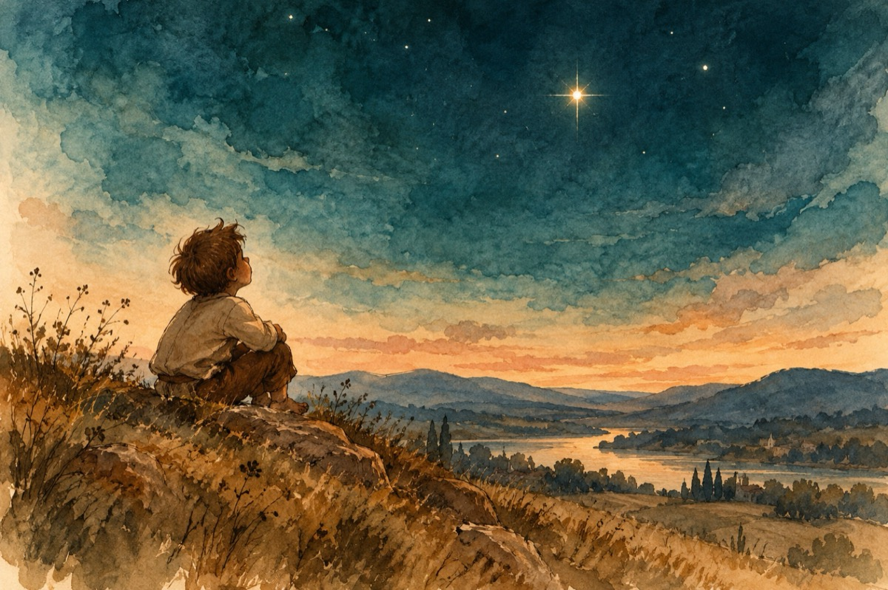

Cine-i Eminescu?
Cine-i Eminescu, m-a întrebat
Copilul ce-nvățase-abia alfabetul
Acesta-i primul meu cuvânt ce l-am notat
Și pentru prima dată i-am văzut portretul.
Aș vrea ca să-l cunosc și să-l salut
După privire seamănă cu cerul
Misterios și-nălțător ca un cosmonaut
Se spune că e frate cu Luceafărul.
Precum bine spui tu fătul meu
A fost și el copil ca tine
Și nu voinicul din poveste sau vreun zmeu
Cu har, talent și muncă și-a făcut un nume.
A început cum de la alfabet și tu
Zidind din slove ce nimeni n-a zidit
Urcând colo-ntre stele lângă al său amic
Luceafărul ce pentru-o clipă, aicea pe pământ a strălucit
Astăzi la întrebarea ta îți voi răspunde
Eminescu e poetul nepereche
Cu opera-i nemuritoare ce străpunge
Întregul Univers precum luceafărul el strălucește!
Vasile Groza